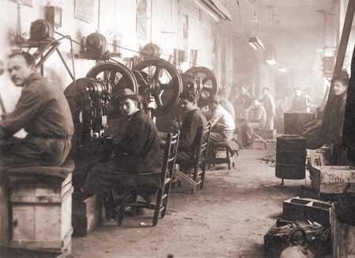
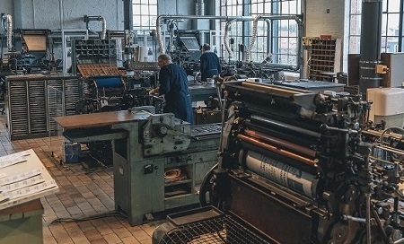
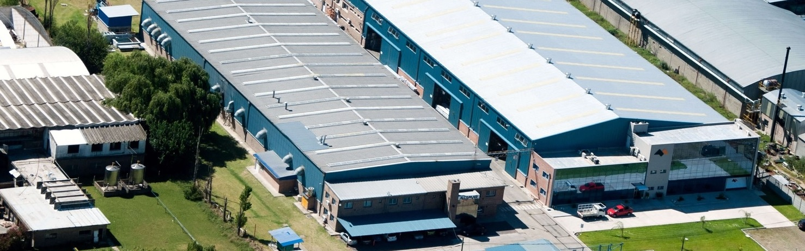

Servicios industriales
Mendoza, Argentina
Nuestra historia se remonta a principios de 1974, cuando Don Ramón Valdez buscando un cambio de aire en sus tareas cotidianas de trabajar la tierra, comienza sin darse cuenta a construir lo que hoy es Servind. El mejor aliado del cliente ante cada desafio que propone el mercado en constante evolución
El pueblo de Tangamandapio representaba una especie de polo agrario para la provincia, pero la distancia que lo separaba de la gran ciudad, lo convertían en vulnerable frente al desarrollo de la actividad. La falta de repuestos e insumos en la zona obligaban a Don Ramón a inventar soluciones para salir del paso. Poco a poco fue notando que sus soluciones no eran paliativas como las consideraba en principio, sino que daban muy buenos resultados y duraban en el tiempo, a pesar de la exigente operación diaria. El boca en boca no tardó en llegar y Don Ramón fue ganando protagonismo con sus reparaciones. Al poco tiempo, era tal la demanda de ayuda que fue reemplazando su actividad diaria y fue deshaciéndose de sus tierras para empezar a montar su taller. En 1985 su taller ya tenía un nombre reconocido en la zona y era visitado por trabajadores de todos los rubros que solicitaban de sus servicios para diversas necesidades. Su sobrino Carlos, comenzó a trabajar con él y al poco tiempo sumaron dos personas más para ayudarlos en sus tareas. Con el paso del tiempo fueron incursionando en otros rubros y en 1992 trasladan sus instalaciones y nace ServInd con una variedad de servicios que la posicionaron como la preferida en varias ciudades a la redonda. El volumen de trabajo fue tal, que los obligó a incluir sistemas informáticos para el manejo de la información. Esta tecnología incorporada trajo consigo la llegada de profesionales y la creación del departamento de ingeniería para el desarrollo de proyectos de acuerdo a los requerimientos de los clientes más exigentes. El desarrollo de grandes proyectos generó la necesidad de mano de obra especializada en tereas técnicas de campo, lo cual no era tarea fácil. El problema a solucionar era ahora, como hacer realidad los proyectos que nacían en pantallas y escritorios de oficina.
Para solucionar esto, ServInd creo dentro de su compañía un sector de capacitación para formar a sus operarios y de a poco se fue creando su propio equipo de operarios para hacer realidad sus proyectos. Don Ramón Valdez poco a poco fue perdiendo fuerzas y debió dejar de lado muchas de sus tareas como mando máximo de ServInd. En 2008 la compañía quedó al mando de su sobrino, Carlos Villagrán quien hasta el día de hoy lleva las riendas de la compañía con una gestión ejemplar y un crecimiento constante. Hoy ServInd cuenta con un predio de 6 hectáreas que incluyen 4 plantas productivas y sus oficinas. Hoy somos una empresa dedicada a la ingeniería, mantenimiento, montajes y automatización de instalaciones industriales que incluye la comercialización de productos específicos, con el propósito de brindar a todo el país y países limítrofes, soluciones industriales integrales.
Actualmente, somos una empresa dedicada a la ingeniería, fabricación, construcción y montaje de estructuras metálicas. Hemos desarrollado un gran equipo de trabajo que nos permite realizar proyectos desde su diseño hasta su puesta en marcha. Como parte de nuestra cartera de clientes contamos con las principales empresas nacionales e internacionales en el sector minero, petróleo, oil & gas y la industria vitivinícola entre otras muchas. Nuestra empresa se desarrolla constantemente y nos potenciamos con nuevos desafíos día a día, impulsados por el crecimiento de la industria en la región.
Nuestros más de 40 años en el rubro, nos avalan como la compañía líder en soluciones industriales a nivel nacional, el mejor aliado que cada uno de nuestros clientes busca ante cada nuevo desafío que la industria, en continuo avance, pone en su camino.